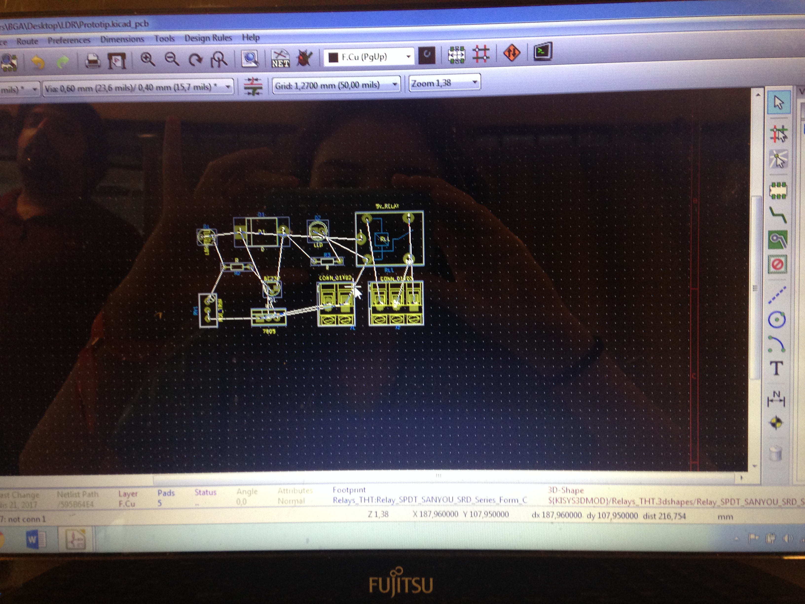
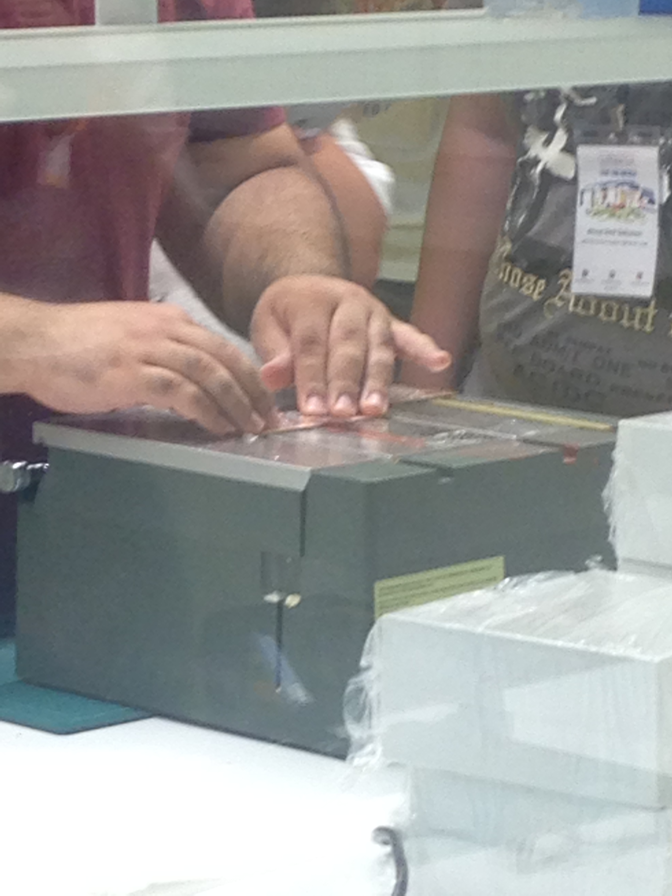
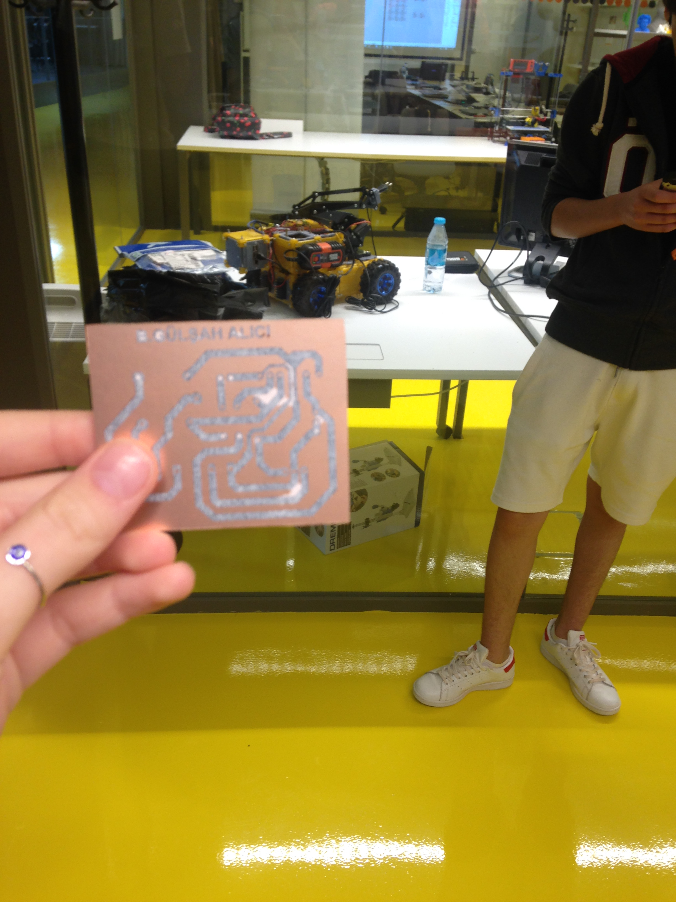
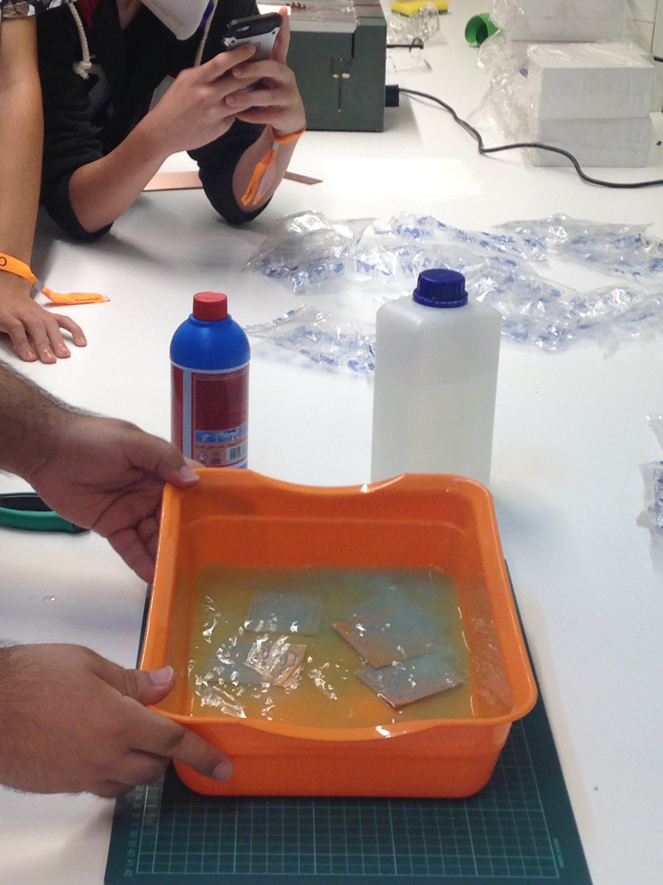
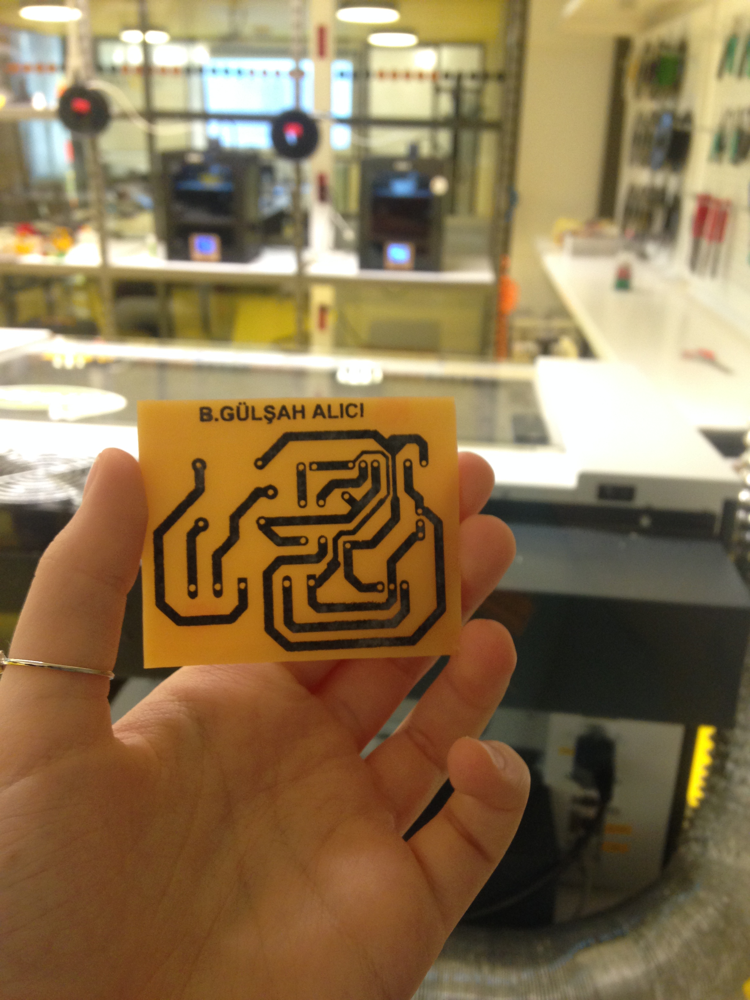
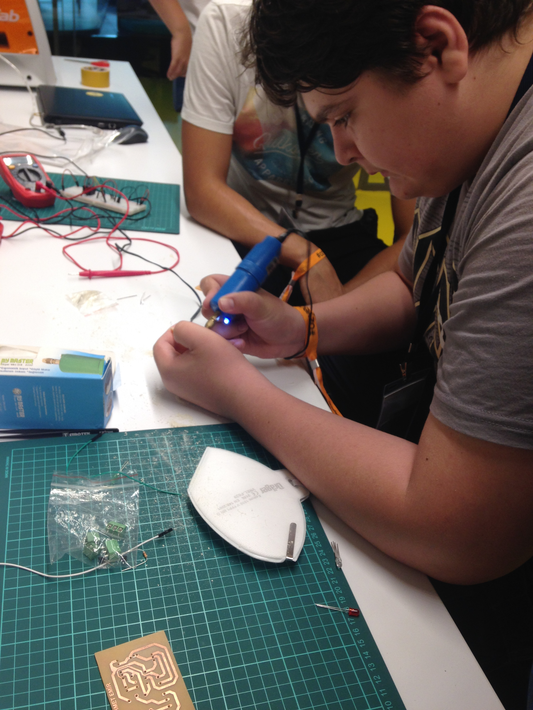
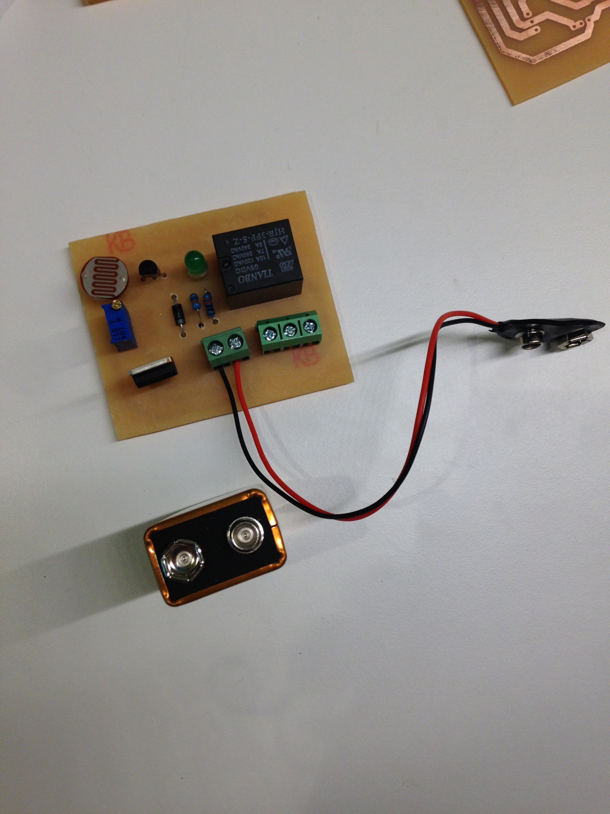
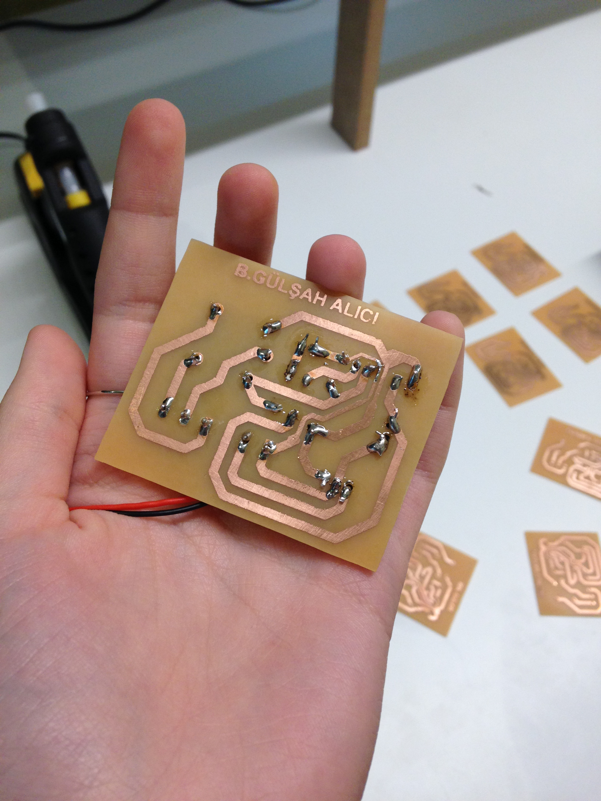

Eğlenceli ve alışmakla geçen ilk günün ardından yeni bir ders için heyecanla İnovasyon Merkezi'ne girdim. Bugünkü konumuz elektronik prototiplemeydi ve derse yapacağımız devreyi ve elemanlarını tanıyarak başladık. Çoğu parçayı duymuş olmakla beraber Röle ve Voltaj Regülatörü gibi elemanları tanımam ve anlamam biraz zamanımı aldı. Yine de hızla devremizi KiCad adlı programda şema şeklinde oluşturarak devam ettik. Röle elemanı kütüphanede ekli olmadığı için onu kendimiz çizdik ve tamamladığımız devreyi kontrol ettik. Her şey güzel giderken hocamızın "Run CvPcb'ye basın" demesiyle programdan yanlışlıkla çıkmam bir oldu. Yaptıklarımın hepsi silinmemiş olsa da özenle çizdiğim Röle elemanım devrede görünmüyordu. Bu nedenle tekrar çizmek zorunda kaldım ve aynı zamanda da yaptıklarımızı kaçırmamaya çalıştım. Yeni açtığımız programda ise her elemanımızı spesifik olarak tanımladık. Sonraki adımda Generate Netlist'i açarak devremizin görünüşünü orada oluşturduk, bağlantılarını çizdik ve öğlen yemeği için kendi isteğimizle biraz geç de olsa oradan ayrıldık.
Geri döndüğümüzde ise bizi üretim aşaması bekliyordu. Hocamız bizim için kendi devresini kağıt üstüne bastırmıştı ve yapmamız gereken bir ütü yardımıyla kağıttaki şemayı bakır plakalara geçirmekti.
Kağıdı bakır plakadan suyla ayırdıktan sonra lazer kesiciyle her devreyi hocamız kesti. Böylece elimizde küçük ve yolları belli birer devre şeması oldu.
 Bu devre şemalarını aside koyduk ve bakır tabaka, çok boğucu ve hoş olmayan bir kokuyla beraber, çıktı. Elimizde kalan devreyi cif ve bulaşık sabunuyla ovarak temizledik; en sonunda ise elemanların girmesi gereken yerleri matkapla deldik.
  En sonunda ise en eğlenceli kısım olan devreyi oluşturmak vardı. Bunun için lehimleme yöntemiyle lehimi eriterek parçaları plakamıza sabitledik. Biraz geç başlamış olmakla beraber, olması gerekenden bir buçuk saat sonra yüzümüzde gülümsemeler, elimizde yeşil ışıklı devreler ve kulağımızda rölelerimiz "tık" sesiyle İnovasyon Merkezi'nden ayrıldık.
 4 Temmuz 2017